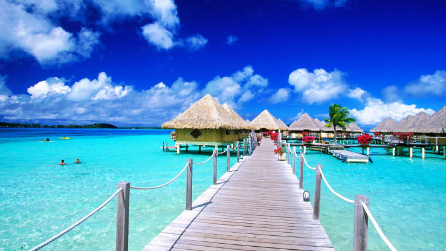
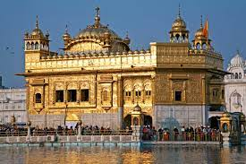
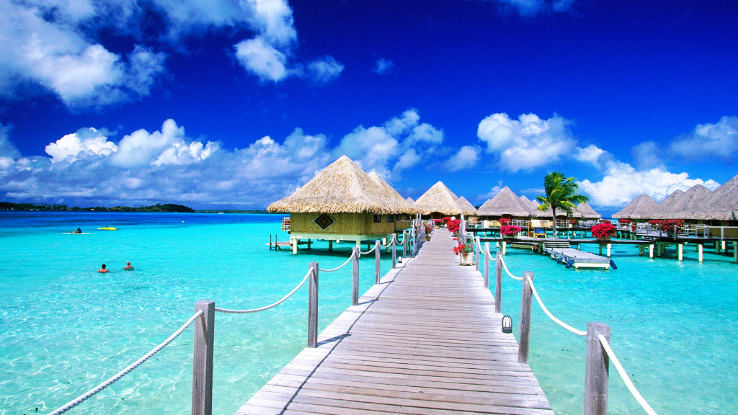
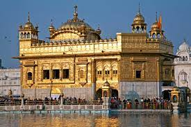

Home About us Contact us


 



The Taj Mahal (/ˌtɑːdʒ məˈhɑːl, ˌtɑːʒ-/; lit. 'Crown of the Palace')[4][5][6] is an ivory-white marble mausoleum on the right bank of the river Yamuna in Agra, Uttar Pradesh, India. It was commissioned in 1631 by the fifth Mughal emperor, Shah Jahan (r. 1628–1658) to house the tomb of his beloved wife, Mumtaz Mahal; it also houses the tomb of Shah Jahan himself. The tomb is the centrepiece of a 17-hectare (42-acre) complex, which includes a mosque and a guest house, and is set in formal gardens bounded on three sides by a crenellated wall. Construction of the mausoleum was essentially completed in 1643, but work continued on other phases of the project for another 10 years. The first ceremony held at the mausoleum was an observance by Shah Jahan, on 6 February 1643, of the 12th anniversary of the death of Mumtaz Mahal. The mausoleum was opened at that time to thousands of mourners.[7][8] The Taj Mahal complex is believed to have been completed in its entirety in 1653 at a cost estimated at the time to be around ₹32 million, which in 2023 would be approximately ₹35 billion (US$498 million).[9] The construction project employed some 20,000 artisans under the guidance of a board of architects led by Ustad Ahmad Lahori, the emperor's court architect. Various types of symbolism have been employed in the Taj to reflect natural beauty and divinity.The construction project employed some 20,000 artisans under the guidance of a board of architects led by Ustad Ahmad Lahori, the emperor's court architect. Various types of symbolism have been employed in the Taj to reflect natural beauty and divinity.
Lakshadweep (Malayalam: [lɐkʂɐd̪βʷiːbɨ̆]) is a union territory of India. It is an archipelago of 36 islands[b] divided into three island subgroups: the Laccadive Islands in the middle with the Amindivi Islands in the north separated roughly by the 11th parallel north and the atoll of Minicoy to the south separated by the Nine Degree Channel along the 9th parallel north. The islands are sandwiched between the Arabian Sea to the west and the Laccadive Sea to the east with the islands located about 220–440 km (140–270 mi) off the Malabar Coast of mainland India. The islands occupy a total land area of approximately 32.62 km2 (12.59 sq mi) with a population of 64,473 as per the 2011 census in the 10 inhabited islands. The islands have a 132 km (82 mi) long coastline with a lagoon area of 4,200 km2 (1,600 sq mi), territorial waters of 20,000 km2 (7,700 sq mi) and an exclusive economic zone of 400,000 km2 (150,000 sq mi). The islands are the northernmost of the Lakshadweep–Maldives–Chagos group of islands, which are the tops of a vast undersea mountain range, the Chagos-Lakshadweep Ridge.The entire union territory is administered as a single district with Kavaratti as the capital. Archaeological evidence from Kalpeni indicate the existence of human settlement in the region from at least 1500 BCE with the earliest reference to the islands are from the Buddhist Jataka tales presumably from the third century BCE. There are references to the control of the islands by the Cheras, one of the three kingdoms of ancient Tamilakam in the Tamil Sangam literature Patiṟṟuppattu. The region was captured by the Pallavas in the 7th century CE before Islam is presumed to have been brought to the region with the arrival of Muslims. In 1n the 11th century CE, the region was part of the Chola kingdom, forming a part of the trade route which connected the Middle East with South Asia. It was briefly under the control of the Kingdom of Kannur before it came under the control of Portuguese in the late 15th century. After the expulsion of Portuguese in 1545, the region was ruled by the Arakkal kingdom, who were vassals to the Kolathiri Rajas of Kannur. The region came under the influence of Mysore kingdom in the late 18th century, which was annexed to the British empire, following the Fourth Anglo-Mysore War in 1799. The region became part of the Dominion of India following the Indian Independence in 1947 and became a union territory in 1956. The name Lakshadweep means "one lakh islands" (Lakṣadvīpa; one hundred thousand islands) in Malayalam and Sanskrit, though the islands are part of an archipelago of few islands. English designated as official language while Jeseri, a dialect of Malayalam is the widely spoken native language in the territory with Dhivehi being the most spoken in Minicoy island. The region comes under the judicial jurisdiction of the Kerala High Court. Fishing and agriculture are the major occupations in the islands.